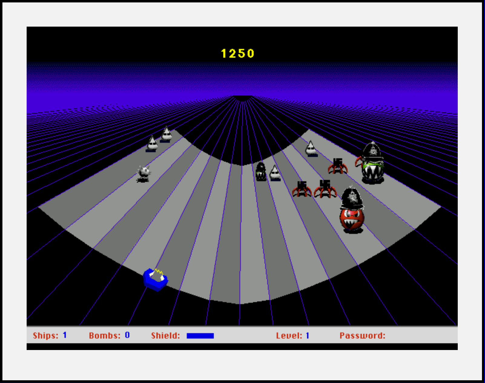

BlackLash
Blacklash (1998) is an interactive web game created by the British art collective Mongrel. Built as a parody of the 1980s arcade game MacAttack, Blacklash uses video game mechanics to critique issues of racism, class, and digital exclusion. Rather than a traditional entertainment game, it invites players to confront stereotypes and systems of discrimination through humor and provocation. The game was created at a time when the internet was rapidly expanding. Blacklash challenged who had access to digital spaces and whose stories were represented online. By combining low-fi graphics, sound bites, and confrontational imagery, Mongrel transformed gameplay into a form of social commentary—forcing players to question how race and identity are “coded” into digital culture.